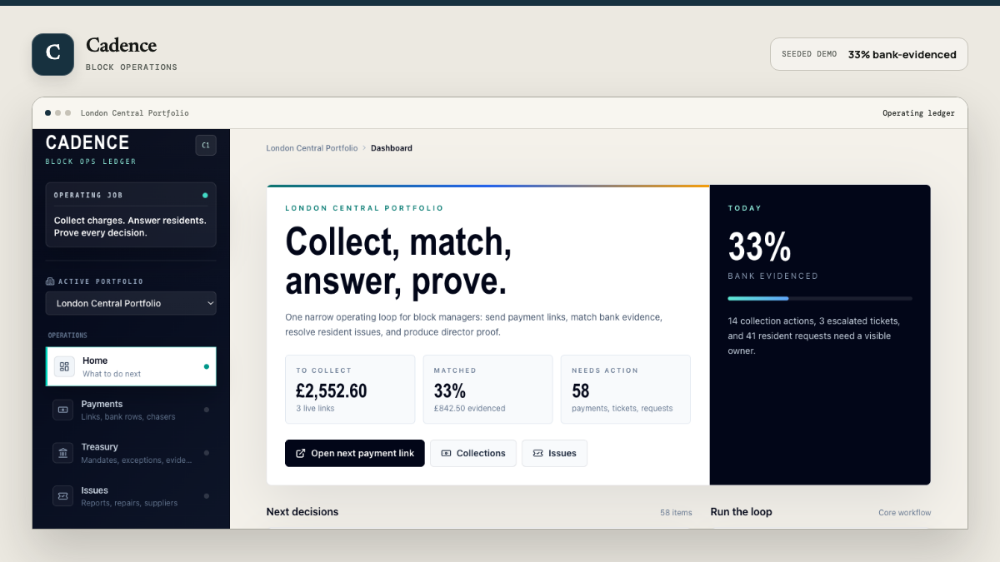

01Live demoPrivate core
Cadence
Block operations
Collections, resident issues and board evidence in one auditable service-charge workflow.
Seeded workspaceRole-based viewsCommercial pilot
Try the live demo ↗